Discover, save and craft 100+ alcohol-free cocktails — a calm home for mindful drinking.
A growing “sober-curious” audience wants the ritual and craft of a cocktail without the alcohol — but discovery still happens through scattered blog posts, screenshots and bar menus. There was no calm, dedicated home for the alcohol-free drink.
People skipping alcohol still want something that feels held — flavour, presentation and a name worth ordering.
Mocktail recipes are buried in long articles and saved photos. Nothing lets you browse, filter and keep them in one place.
Recipe apps treat drinks as an afterthought — no ingredient filters, no “surprise me”, no space to add your own.
One clear job, done simply: a single, friendly home where anyone can discover mocktails by category or ingredient, keep the ones they love, and build their own.
The project moved through a complete cycle — understanding the user, structuring the experience, designing the interface, then building and refining it as a real React Native app.
Looked at how people find and keep non-alcoholic recipes.
Defined the core jobs: discover, decide, save, create.
Mapped every path including share, empty and random states.
Reduced the app to four screens and one bottom navigation.
Built a compact system: colour, type, cards, chips, states.
Wired a clickable flow to test discovery and the add-recipe form.
Translated the design into reusable React Native components.
Checked navigation, validation and the empty / error states.
Tuned animation performance and refined naming and labels.
The main journey is deliberately short. Every entry point — search, category or a random suggestion — leads to the same rich detail screen, where the drink can be saved or shared.
Built around four core actions, each mapped to a screen. A single bottom navigation keeps the whole product one tap away.
Browse, search & filter — the entry point.
Ingredients, steps & the save / share actions.
Saved recipes, with an empty state for newcomers.
Create a custom mocktail with live validation.
Every screen ships in both light and dark mode — discovery, recipe detail, favourites and a create-your-own flow with live validation.
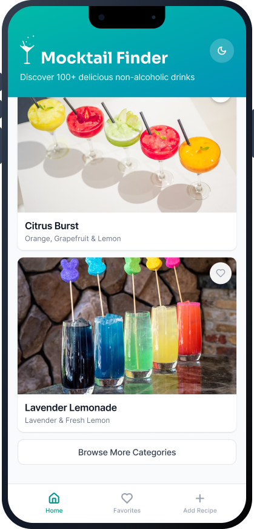
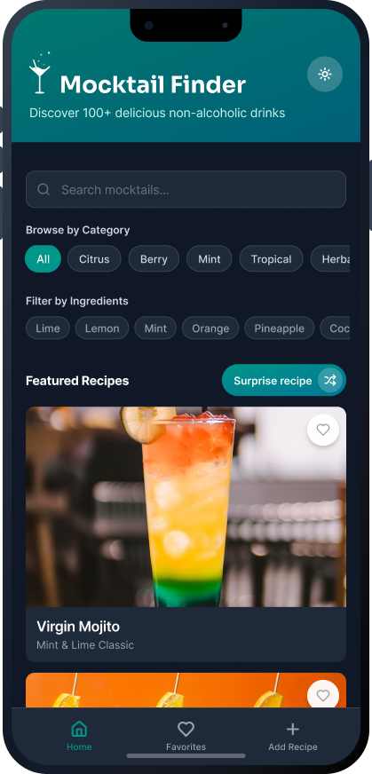
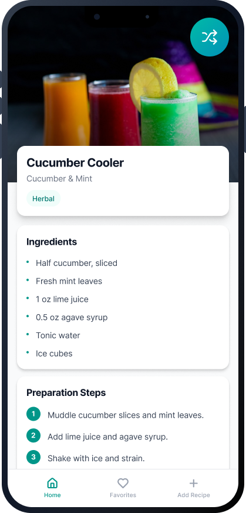
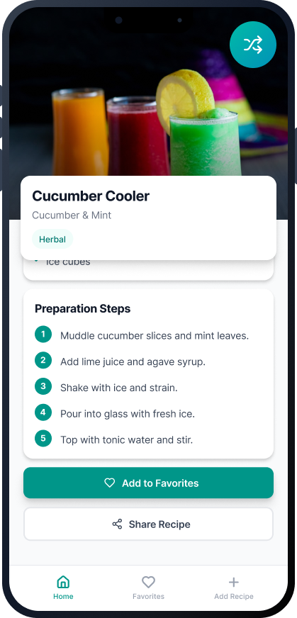
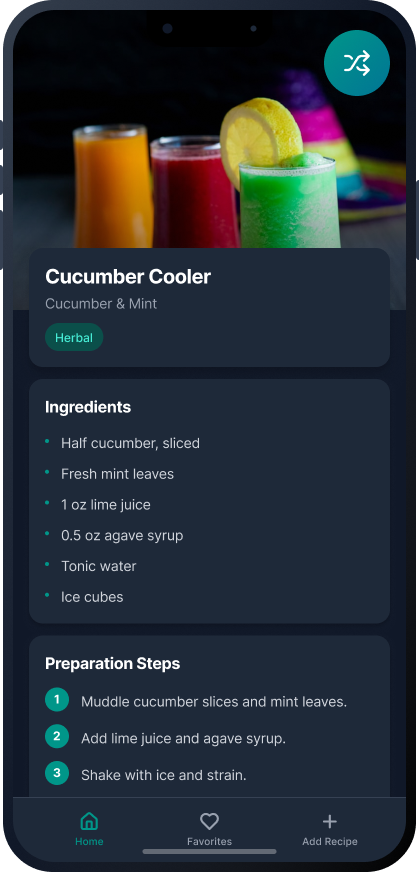
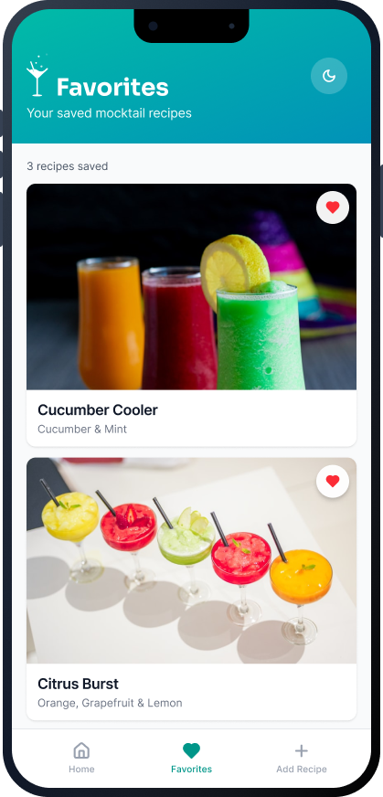
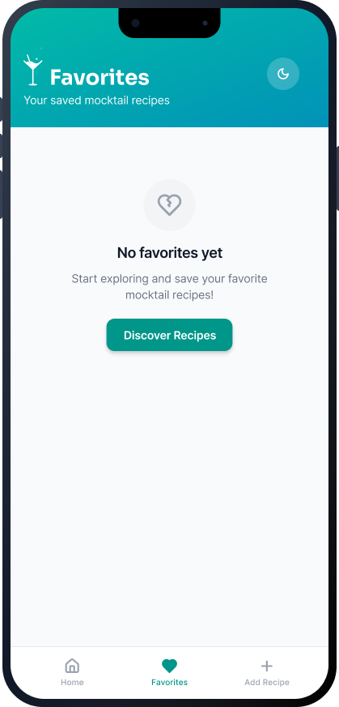
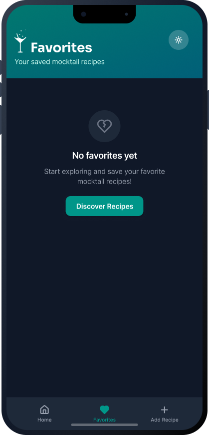
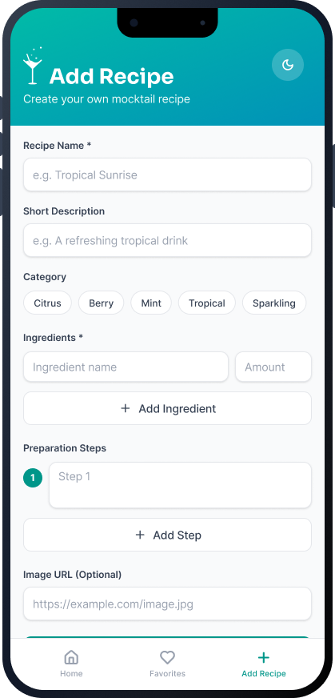
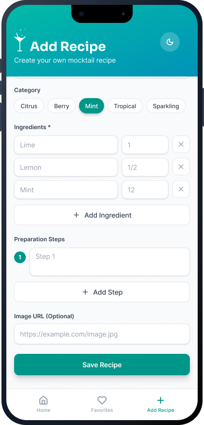
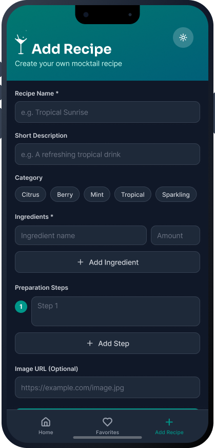
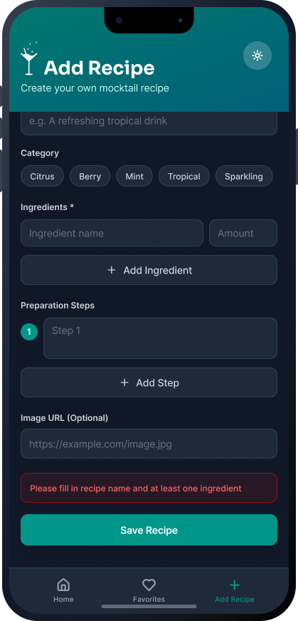